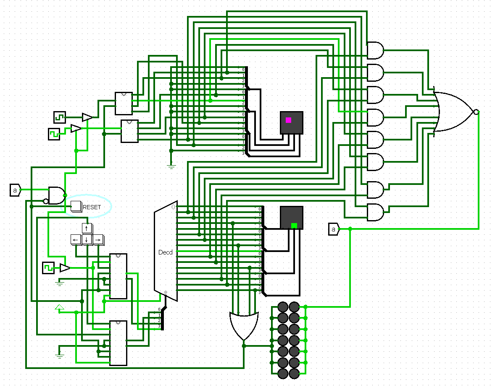

Archive / Sequential logic / Simulated in Logisim
Frogger Lite: state-machine game simulation
Implemented and integrated the digital logic for a 4 × 4 obstacle-avoidance game in Logisim. The simulation includes bounded player movement, independently clocked obstacles, display decoding, collision detection, a win state, and asynchronous reset.
- My contribution
- State-machine design & subsystem integration
- Tools
- Finite state machines · Logisim · System integration
- Outcome
- Working collision and win logic in simulation

The problem
Move a player across a 4 × 4 display while obstacles cross the same logical space. A collision must freeze the game; reaching the top row must register a win. Separate player and obstacle displays represent the two layers in the simulation.
Breaking the system into parts
Two identical finite state machines track horizontal and vertical position. Each accepts a pair of directional inputs, holds its value when neither or both are asserted, and prevents movement beyond the display boundary. Binary state assignments feed the display decoder directly.
Ring counters generate moving obstacles. One includes an extra state so the obstacle spends a clock cycle off-screen before returning. The player and obstacle signals then feed collision and win logic, which interrupts the clocks to freeze the game.
Integration details
- Asynchronous reset establishes a known initial state across the flip-flops.
- Independent obstacle clocks create different movement rates.
- Subcircuits separate player state, obstacle generation, display decoding, and game termination.
- State diagrams, transition tables, and Karnaugh maps document the movement logic.
Result & scope
The published Logisim model includes working player movement, collision detection, and win logic. It demonstrates how individually understandable subsystems combine into a coherent behavior. This case study describes the simulation; the original final-project presentation is linked separately.